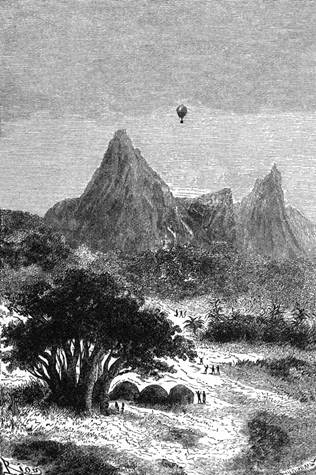

Gumovníkový les. – Modrá antilopa. – Heslo k návratu. – Nenadálý útok. – Kaněme. – Noc v širém vzduchu. – Mabunguru. – Džihu la Mkoa. – Zásoba vody. – Příjezd do Kaze.
Holý, vyprahlý kraj, jevící jílovitou půdu, jež vedrem pukala, zdál se býti liduprázdný; tu a tam bylo viděti stopy karavan, zbělelé hnáty lidské a zvířecí na polo ohlodané a s okolním prachem splynulé.
Po půlhodinném pochodu zabrali se Dick a Joe do gumovníkového lesa s prstem na spoušti ručnice, rozhlížejíce se bystrýma očima. Nevěděliť, na koho uhodí. Jakkoli Joe nebyl riflemanem[33], dovedl přec obratně vládnouti palnou zbraní.
„Je věru příjemno projít se, pane Dicku, a přece není tato půda hrubě pohodlná,“ prohodil zakopnuv o několik drobných křemenů, jimiž byla poseta.
Kennedy pokynul soudruhovi, aby mlčel a stanul. Musili se obejíti bez psův, a ač byl Joe velice hbitý, nebyl přec obdařen čenichem ohaře nebo chrta.
V korytě ručeje, kde se rozlévalo posud několik kaluží, napájelo se stádo asi dvanácti antilop. Tato půvabná zvířata zdála se znepokojena větříce nebezpečí; po každém doušku vztyčovala čile lepé hlavy, lokajíce pohyblivými nozdrami vzduch směrem k lovcům.
Kennedy obešel několik houštin, kdežto Joe setrval nehybně na místě; dostal se na dostřel a vypálil. Stádo zmizelo mžikem; jediná antilopa, samec, byvši střelena za lopatku, skácela se na zemi jako bleskem zasažena. Kennedy pospíšil ke kořisti.
Byl to blawe-bock, překrásné zvíře bleděmodré s odstínem do siva, a na břiše a vniterních stranách noh jako sníh bílé.
„Znamenitá rána!“ zvolal lovec. „Je to velmi vzácný druh antilopy, i doufám, že se mi podaří upraviti její kůži tak, aby zkázy nevzala.“

Viktorie sestupovala po protějším úbočí Rubeha.
„Jakže? míníte to do opravdy, pane Dicku?“.
„Zajisté! Pohleď pak na tu nádhernou srst.“
„Ale doktor Fergusson nikdy nedopustí přibrat takové nadbytečné břímě.“
„Máš pravdu, Joe! Je však mrzutá věc zanechati celé zvíře tak krásné!“
„Celé? ne, ne, pane Dicku; odejmeme mu všecky živné výhody, jimiž se honosí, a dovolíte-li, provedu to rovněž dobře jako starosta počestného cechu londýnských řezníků.“
„Jak ti libo, příteli, víš však, že dovedu jakožto lovec rovněž snadno stáhnouti zvěři kůži jako ji skoliti.“
„O tom nepochybuju, pane Dicku; neobtěžujte si tedy postavit kamna ze tří kamenů; suchého dříví máte tu hojnost, i vyprošuju si jenom několik minut, abych využil řeřavých uhlů, které napálíte.“
„To nepotrvá dlouho,“ odtušil Kennedy.
Jal se hned budovati ohniště, jež za několik minut plápolalo.
Joe vyřízl z těla antilopy tucet řízkův a nejchutnějších kusů z beder, které proměnily se brzy v šťavnaté roštěnce.
„To potěší přítele Samuela,“ pravil lovec.
„Víte-li pak, nač myslím, pane Dicku?“
„Na to, tuším, co strojíš: na beefsteaky?“
„Ani zdání. Myslím, jak bychom se asi utvářili, kdybychom už nezastihli balonu.“
„Aj! jaká to myšlenka! Což chceš, aby nás doktor opustil?“
„Nechci, ale což kdyby se kotva vytrhla?“
„Nemožná věc. Ostatně nebylo by Samuelovi za těžko zase s balonem sestoupit; vládne jím dosti dobře.“
„Ale což kdyby jej vítr odnesl, kdyby nebyl s to, aby se k nám vrátil?“
„Poslyš, Joe, dej pokoj s těmi domněnkami; nejsou nikterak zábavné.“
„Ach, pane, co se děje na tomto světě, všecko je přirozené; všecko pak může se přihodit, a proto sluší všecko předvídat…“
V tom houkl vzduchem výstřel.
„Co to?“ lekl se Joe.
„Má karabina! znám její třesk!“
„Znamení!“
„Hrozí nám nebezpečí!“
„Možná, že jemu,“ odpověděl Joe.
„Ku předu!“
Lovci sebrali chvatně výtěžek honby a dali se v pochod, řídíce se ulomenými větvemi, jimiž byl Kennedy označil cestu. Pro houštinu téměř neproniknutelnou neviděli Viktorie, od níž nemohli býti příliš vzdáleni.
Zahučela druhá rána.
„Je nakvap,“ prohodil Joe.
„Hoj, ještě jedno třesknutí.“
„Zdá se mi, jako by to byla osobní obrana.“
„Pospěšme si.“
I pádili, co jim nohy stačily. Dorazivše na kraj lesa uzřeli předkem Viktorii na svém místě a doktora v loďce.
„Co se s ním děje?“ zeptal se Kennedy.
„Velký Bože!“ vykřikl Joe.
„Co vidíš?“
„Tam dole zástup černochů, kteří obléhají balon.“
Na tři tisíce kroků tísnilo se vskutku asi třicet postav u paty sykomory posunkujíce, ryčíce a skáčíce. Několik jich vylezlo na strom a šplhalo se až do nejvyšších větví. Podobalo se, že je svrchované nebezpečí.
„Po pánovi je veta!“ zvolal Joe.
„Vzhůru, Joe, chladnou krev a bystré oko. Máme v rukou život čtyř těch mouřenínů. Ku předu!“
Když uběhli přes tisíc kroků největším hurtem, vyšla z loďky nová rána; stihla velkého chlapa, jenž lezl po provaze od kotvy. Bezduché tělo padalo s větve na větev a uvízlo na dvacet stop nad zemí, klátíc ve vzduchu oběma pažema i oběma nohama.
„Co to?“ podivil se Joe stanuv, „čím se, u ďasa, drží ten lotr?“
„Na tom nesejde,“ odpověděl Kennedy, „běžme! běžme!“
„Ha! pane Kennedy,“ rozesmál se Joe: „za ocas! drží ten se za ocas! Opice! jsou to jen opice.“.
„Ty jsou ještě horší než lidé,“ odslovil Kennedy vraziv do vřeštící smečky.
Byla to tlupa paviánů dosti strašných, divokých a ukrutných, na jichž psí mordy hrozno bylo pohleděti. Než několik střelných ran přimělo je k rozumu, a pitvorná ta rota utekla, zůstavivši několik členů na zemi.
Kennedy chytil se mihem řebříku; Joe vlezl do sykomory a vybavil kotvu; loďka spustila se až k němu, i dostal se do ní bez obtíží. Za několik minut pak vznesla se Viktorie do povětří a zamířila k východu povanem mírného větru.
„To byl pěkný útok!“ pravil Joe.
„Domnívali jsme se, že’s obležen domorodci.“
„Byli to na štěstí jenom opice!“ odpověděl doktor.
„Z dáli neliší se valně od lidí, milý Samuele.“
„Z blízka také ne,“ dodal Joe.
„Buď jak buď,“ ujal se slova Fergusson, „tento útok opic mohl míti velmi vážné následky. Kdyby byla kotva povolila jich neustálému škubání, kdo ví, kam by mě byl vítr zanesl!“
„Co jsem vám říkal, pane Kennedy?“
„Měl jsi pravdu, Joe; ale rovněž pravda jest, že jsi v tu chvíli pekl antilopí řízky, které dráždily mou chuť pouhým pohledem.“
„Rád věřím,“ odvětil doktor, „antilopí maso je výtečné.“
„Přesvědčte se o tom, pane, je prostřeno na stůl.“
„Na mou věru,“ pravil lovec, „tyto řízky zvěřiny vydychují divokou vůni, která nezasluhuje nikterak pohrdnutí.“
„Aj! chtěl bych se živiti antilopím masem až do smrti“ liboval si Joe s plnými ústy, „zvláště se sklenkou grogu, aby se ulehčilo zažívání.“
Joe upravil řečený nápoj, jejž ochutnali s náležitým povděkem.
„Až dosud daří se vše dosti dobře“ prohodil.
„Velmi dobře,“ přisvědčil Kennedy.
„Poslyšte, pane Dicku: litujete-li, že jste šel s námi?“
„Na toho bych se rád podíval; kdo by mi byl zabránil!“ odpověděl lovec s rázností ve tváři.
Byly čtyři hodiny odpoledne; Viktorie octla se v rychlejším proudě; půda stoupala nepozorovaně, a za nedlouho označoval tlakoměrný sloupec výšku 1500 stop nad hladinou mořskou. Doktor byl pak nucen udržovati vzducholoď dosti silným napětím plynu, a dmuchavka pracovala bez přítrže.
Okolo sedmi hodin vznášela se Viktorie nad kotlinou kaněmskou; doktor poznal brzy tento orný kraj v rozloze patnácti kilometrů s dědinami skrytými mezi baobaby a tykvovníky. Tam je sídlo jednoho z králův ugogských, kde vzdělanost je snad méně pozadu, neboť členové vlastní rodiny prodávají se tam řidčeji; leč zvířata a lidé žijí pospolu v okrouhlých chatách, zbudovaných bez tesaného dříví v podobě kopek sena.
Za Kaněmem stává se krajina vyprahlou a skalnatou, nežli však uběhla hodina, nabylo zase rostlinstvo v úrodné nížině nedaleko Mdabu a vší své bujnosti. S dnem ulehl i vítr, a ovzduší zdálo se usínati. Doktor hledal nadarmo proud v různých výškách; vida tento klid v přírodě ustanovil se na tom, že stráví noc v povětří, a pro větší jistotu vznesl se asi na 1000 stop. Viktorie ani se nepohnula. Noc nádherně hvězdami se třpytící nastala v tichosti.
Dick a Joe natáhli se na pokojné lože a spali tvrdě za hlídky doktorovy; o půlnoci byl vystřídán Skotem.
„Kdyby se udála příhoda sebe nepatrnější, vzbuď mne,“ nařídil mu; „a předkem nepouštěj se zřetele tlakoměr. Jeť naším kompasem!“
Noc byla chladna; jevil se rozdíl skoro 27 stupňů[34] mezi její teplotou a teplotou denní. Jakmile se stmělo, rozzvučel se noční koncert zvířat, která žízeň a hlad vyhánějí z doupat; žáby skřehotaly sopránem, s nímž se mísilo vytí šakalů, kdežto mohutný bas lvů přizvukoval akkordům tohoto živoucího orchestru.
Zaujav z rána své stanovisko, pohlédl doktor Fergusson zkoumavě na bussolu a znamenal, že vítr v noci přeskočil. Viktorie urazila asi padesát kilometrů, směřujíc už dvě hodiny k severovýchodu; přeletěla Mabunguru, kamenitou zemi, posetou syenitovými balvany pěkně vyhlazenými a všecku prostoupenou skalisky v podobě oslích hřbetů; kuželovité vypnuliny podobné skalám karnackým pokrývaly půdu jako tolikéž kamenných oltářů dunidských; tu a tam bělaly se četné hnáty buvolův a slonů; stromoví bylo zde málo leč na východě, kde se v hlubokých lesích skrývalo několik vesnic.
K sedmé hodině objevila se kulatá skála v rozloze téměř čtyř kilometrů jak ohromná želva.
„Jsme na dobré cestě,“ pravil doktor Fergusson. „Tu jest Džihu la-Mkoa, kde se zastavíme na několik okamžiků. Rád bych obnovil zásobu vody potřebnou k činnosti dmuchavky; pokusme se zachytit někde.“
„Je tu málo stromů,“ namítl lovec.
„Pokusme se přece; Joe, vyhoď kotvy.“
Balon pozbývaje znenáhla vzestupné síly přiblížil se k zemi; kotvy se smýkaly; hák jedné z nich uvázl v skalní rozsedlině, a Viktorie stanula.
Nikdo se nedomnívej, že doktor za zastávek mohl úplně shasiti dmuchavku. Bylať rovnováha balonu vypočtena zároveň s hladinou mořskou; země pak stoupala neustále, a ballon nalézaje se výši ve 600-700 stop byl by se snažil klesnouti níže než půda sama; bylo tudíž třeba udržovati jej vzhůru jistým napětím vo díku. Jenom tehda, kdyby byl doktor za úplného bezvětří spustil loďku až na zemi, byl by balon zbavený značné tíže setrval v kolmé poloze bez pomoci dmuchavky.
Mapy věstily rozsáhlé močály na západním svahu Džihu-la– Mkoy, Joe vydal se tam sám se soudkem, do něhož vešlo se asi deset gallonů; nalezl bez nesnází naznačené místo nedaleko opuštěné vísky, nabral vody a vrátil se ani se za tři čtvrti hodiny; nespatřil nic zvláštního leda ohromné pasti na slony; byl by málem sám spadl do jedné z nich, kde tlela kostra zpola ohlodaná.
Přinesl z vycházky jakési mišpule, kteréž opice dychtivě žerou. Doktor poznal ovoce „mbenbu“, stromu velmi hojného ve východní končině Džihu-la-Mkoy. Fergusson očekával Joa poněkud netrpělivě, neboť pobyt sebe kratší v této nehostinné zemi vzbuzoval v něm vždy obavy.
Voda naložena bez obtíží, neboť loďka snesla se takměř až na zemi; Joe vyrval kotvu a vylezl hbitě k svému pánovi. Doktor rozdmýchal za chvíli plamen, a Viktorie dala se zase na cestu vzduchem.
Byla ještě vzdálena na stošedesát kilometrův od Kaze, důležité osady v africkém vnitrozemí, kam cestovatelé vzhledem k příznivému jihovýchodnímu proudu mohli doufati, že dorazí ještě toho dne; postupovali s rychlostí dvacíti kilometrů za hodinu; říditi vzducholoď bylo pak dosti nesnadno; bez silného napětí plynu nebylo lze povznésti se příliš vysoko, neboť kraj měl již průměrnou výšku 3000 stop nad mořem. Doktor pak volil raději, pokud možno, nezvyšovati napětí; pročež bral se velmi obratně křivolakou čarou po svahu dosti příkrém a přeletěl blízko nad vesnicemi Thembem a Tura-Velsem. Tato náležela již k území uňamvezskému, překrásné krajině, kde stromy dorůstají největších rozměrů, mimo jiné i kakty, vynikající obrovitostí.
Okolo dvou hodin vznášela se Viktorie za krásné pohody pod žhavým sluncem, které pohlcovalo sebe nepatrnější proud vzduchový, nad městem Kaze, ležícím zdálí pěti set osmdesáti kilometrův od pomoří.
„Odpluli jsme ze Zanzibara v devět hodin.“ pravil doktor Fergusson, prohlížeje své zápisky, „a po dvoudenní plavbě urazili jsme s oklikami skorem osm set kilometrů. Setníci Burton a Speke potřebovali půlpáta měsíce, aby vykonali touž cestu.“